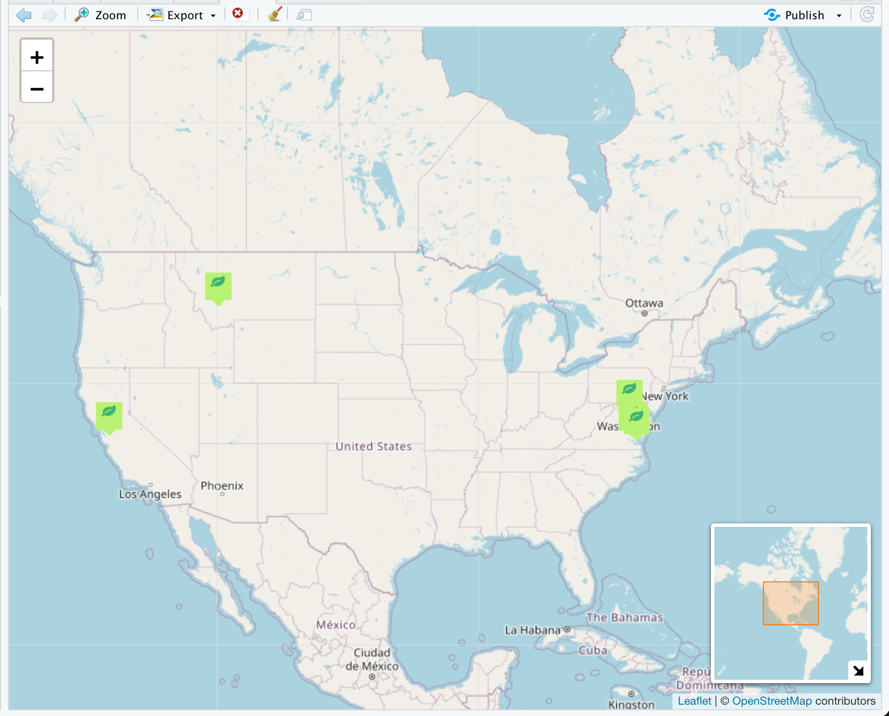
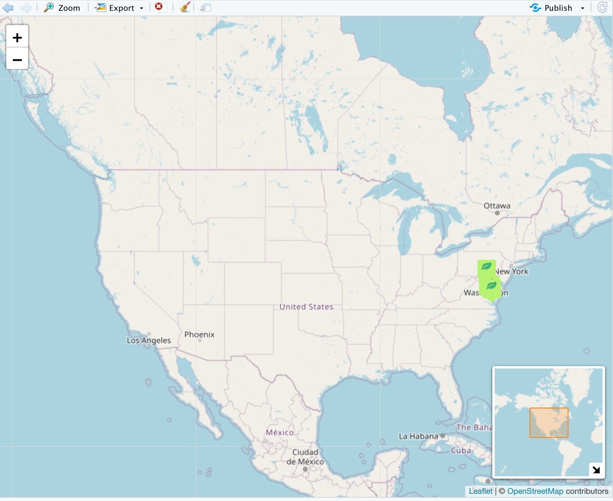

gatoRs (Geographic and Taxonomic Occurrence R-Based Scrubbing) provides users with tools to streamline the downloading and processing biodiversity data.
Data Downloading
Identifying Synonyms
Historically, many names may have been used to refer to your taxa of interest. For example, specimen representing Galax urceolata (Diapensiaceae) can be found under the scientific name Galax aphylla, despite the latter being invalidated over 50 years ago (see more here). Since synonyms are common, we designed gatoRs retrieve biodiversity records based on a list of names, however the user must supply the synonym list.
There are many databases available to compile synonym lists for plant species including:
- World Flora Online - WFO Plant List
- TROPICOS
- World Checklist of Vascular Plants
- USDA PLANTS Database
- International Plant Names Index
- World Plants
Many R packages have been developed to access these databases including:
Download with gatoRs
With gators_download() you can obtain biodiversity
records for your species of interest from both GBIF and iDigBio. This
function is innovative in how it searches iDigBio. Unlike
spocc::occ(), we do not query the iDigBio API using the
scientific name field, as this will only return exact matches. Instead,
we designed a “pseudo-fuzzy match” to search all fields for partial
matches to the supplied scientific names. Additionally, the columns
returned have been handpicked to aid in processing records for
investigations of species distributions (see more
gators_download()).
After you identify synonyms, create a list of all possible names for
your species of interest with the first name in the list as the accepted
name (ex. c("Galax urceolata", "Galax aphylla")). Note, the
first name in your list will be used to identify the GBIF species code
when gbif_match = "code".
Example:
library(gatoRs)
galaxdf <- gators_download(synonyms.list = c("Galax urceolata", "Galax aphylla"),
write.file = TRUE,
filename = "base_folder/my_file.csv", # Location to save file - must end in .csv
gbif.match = "fuzzy",
idigbio.filter = TRUE)Data Processing
We downloaded 6885 observations for Galax urceolata in the example above. Of these observations, only those with locality information will be helpful when investigating this species distribution.
Identify Records Missing Locality Information
Locality information can be redacted or skewed due to protect threatened taxa, often locality information will be provided upon request or can be identified through georeferencing. We created functions to aid in this process.
Redacted Records
Locality information can be redacted or skewed due to protect threatened taxa; often locality information will be provided to aid research upon request.
To find data that needs to be manually received by an institution via
a permit (or removed from the data set), use
needed_records(). After receiving the data from herbaria,
manually merge the obtained records with your original data set.
Example:
redacted_info <- needed_records(galaxdf)Records to Georeference
Some records may be missing latitude and longitude values, however locality information can be used to assign coordinates to the record through georeferencing.
To find data lacking coordinates but containing locality information,
use need_to_georeference(). You should georeference these
records and then manually merge the obtain records with your original
data set.
Example:
to_georeference <- need_to_georeference(galaxdf)Occurrence Data Cleaning
Here we walk through each cleaning function, however we also created
a simple one-step option full_clean(), see below.
Resolve Taxon Names
To find data containing scientific names corresponding to your
desired species, use taxa_clean(). Use your downloaded data
from the first step as input, as well as a synonyms list, the accepted
name, and the filter option (exact, fuzzy, or interactive).
Example:
galaxdf <- taxa_clean(df = galaxdf,
synonyms.list = c("Galax urceolata", "Galax aphylla"),
taxa.filter = "fuzzy",
accepted.name = "Galax urceolata") # creates a new column with accepted name for easy comparisonRemove Particular Record Bases
Sometimes, certain bases of records may want to be removed from the
data set. To do this, we provide basis_clean(). This
function can be used interactively by simply supplying a df, but no
basis.list value.If a list of basis is provided, the function will
select only records where the basisOfRecord value fuzzy match values in
the list provided.
Example:
galaxdf <- basis_clean(galaxdf, basis.list = c("Preserved Specimen","Physical specimen"))Clean Locality
Basic Locality Clean
Here we remove any records with missing coordinates, impossible
coordinates, coordinates at (0,0), and any that are flagged as skewed.
The skewed records can be identified with the
remove_skewed() function and row value for the
‘InformationWitheld’ column. We also provide the option to round the
provided latitude and longitude values to a specified number of decimal
places.
galaxdf <- basic_locality_clean(df = galaxdf,
remove.zero = TRUE, # Records at (0,0) are removed
precision = TRUE, # latitude and longitude are rounded
digits = 2, # round to 2 decimal places
remove.skewed = TRUE)Find and Remove Flagged Points
To find records that may have problematic coordinates, use
process_flagged(). This function can either automate the
process of finding and removing problematic points
(interactive = FALSE) or allow for manual inspection. The
latter will let you manually remove points deemed improper by viewing
the points on a graph.
This function utilizes
CoordinateCleaner::clean_coordinates().
Example:
galaxdf <- process_flagged(galaxdf, interactive = TRUE)Figure 1: Interactive map that appears when
process_flagged() is run.
Figure 2: Interactive map that appears after we remove
points interactively with process_flagged(). Points 1, 3,
5, 6, and 7 were removed.
Remove Duplicate Records
There can be an overlap of records with GBIF and iDigBio. Hence,
duplicate records may be downloaded. To find and remove records with
identical event dates and identical coordinates, use
remove_duplicates().
Example:
galaxdf <- remove_duplicates(galaxdf)Spatial Correction
The last processing step is spatial correction. Collection efforts can lead to the clustering of points and filtering can help reduce this clustering. Here we provide functions to reduce the effects of sampling bias using randomization approach and retain only one point per pixel.
Spatial thining
We thin points by utilizing spThin::thin().
Example:
galaxdf <- thin_points(galaxdf,
distance = 5,
reps = 100)One Point Per Pixel
Maxent will only retain one point per pixel. To make the ecological niche analysis comparable, we will retain only one point per pixel.
Example:
galaxdf <- one_point_per_pixel(galaxdf,
resolution = 0.5, # for 30 arc sec raster layers
precision = TRUE,
digits = 2) Full Clean
Finally, instead of step-by-step cleaning, we created a single function to streamline this process.
Example:
galaxdf <- full_clean(df = galaxdf,
synonyms.list = c("Galax urceolata", "Galax aphylla"),
taxa.filter = "fuzzy",
accepted.name = "Galax urceolata", remove.zero = TRUE,
precision = TRUE, digits = 2, remove.skewed = TRUE,
basis.list = c("Preserved Specimen","Physical specimen"),
remove.flagged = TRUE, thin.points = TRUE,
distance = 5, reps = 100,
one.point.per.pixel = TRUE, raster = NA, resolution = 0.5)